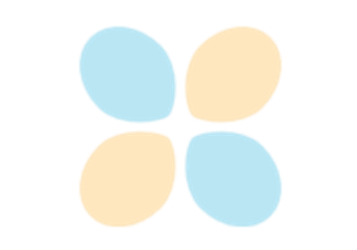

coremltools API Reference
7.1
API Contents
Converters
Model APIs
MIL Builder
MIL Input Types
MIL Ops
MIL Graph Passes
Optimizers
Resources
Guide and Examples
Core ML Format Specification
Previous Versions
GitHub
coremltools API Reference
<no title>
View page source

Linear Quantization
Linear Quantization
Gallery generated by Sphinx-Gallery